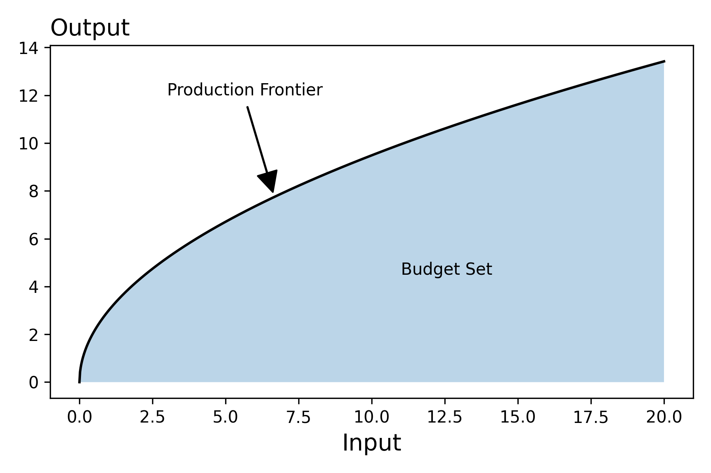

Production Function
Notebooks
| Description | Notebook | Status |
|---|---|---|
| Production Function | Work In Progress |
Introduction
Firms make decisions regarding what to produce and how to produce it. This relationship between what to produce and how to produce it is governed by the level of technology or information that a firm has access to. Hopefully this idea is natural to you in that you probably first saw it when thinking about production possibilities frontiers in your Principles of Microeconmics Course. If you recall, there, we modeled firms as differing in their ability to turn inputs into different outputs.
Formally, we can model this relationship between inputs and outputs via a function that maps from the set of factors of production1 to the set of outputs.
Below, we plot what this might look like if we had one input and one output.

Isoquants
As with the objective function that we considered in the case of the consumer, the level sets of the production function have an economic name -- they are referred to as isoquants -- and are economically meaningful in that they illustrate the rate at which firms tradeoff one input for another (although in contrast to indifference curves, they are observable!)
Derivation
Let's say that we have an isoquant where \(x_1\) and \(x_2\) correspond to the amount of inputs used to produce \(c\) units of output
The above equation defines an implicit function which we can define as follows
The technical rate of substitution is defined the derivative of the isoquant which we can compute as follows:
Info
The implicit function theorem can be understood as providing a set of sufficient conditions for this step.
Let's start by writing the isoquant in terms of the function \(x_2^*(x_1)\)
Now, both the left and right hand sides are functions of \(x_1\), so we can differentiate both side with respect to \(x_1\).
From our understanding of calculus, this derivative can be expressed as follows:
Hopefully, you can interpret these terms:
- Marginal Product of \(x_1\): \(\partial _0F(x_1,x_2)\)
- Marginal Product of \(x_2\): \(\partial _1F(x_1,x_2)\)
- Technical Rate of Substitution: \(\frac{d}{dx_1}x_2^*(x_1)\)
We see then that we can express the technical rate of substition in terms of the negative of the ratio of the two marginal products:
Toy Example
To make things concrete, let's create a toy example. We'll consider the following production function
Check your understanding -- With the following values, what do you get as the output and the technical rate of substitution?
Question
In our work above, we compute the technical rate of substituion given the quantities of each input. This is not the only starting point (information) from which we can compute the TRS though. We can also compute it if we are given one input and the desired output. Consider: How might we incorporate our previous work to build this new function?
Marginal Product
Above, we introduced the idea of the marginal product of a factor of production -- how does the output change when we increase one of the inputs "slightly" holding every other factor of production constant. We can now go up one level and think about how does the marginal product of an input change when we increase in the input slightly -- the second derivative of the production function!
We may also be interested in how the marginal product of one factor of production changes when we increase another factor.
Hopefully, you are on a role with this and you are thinking -- why stop there? -- why not take the derivative of the marginal product of \(x_1\) with respect to \(\alpha\)? Go for it!
Returns to Scale
The final idea that we want to introduce in this lecture is this notion of returns to scale. In many ways it complements the above notions of Marginal Product
The sign of the question mark defines whether we have increase, decreasing, or constant returns to scale.
-
The factors of production would include anythin in the production process such as land, capital (both fisical and financial) and labor ↩